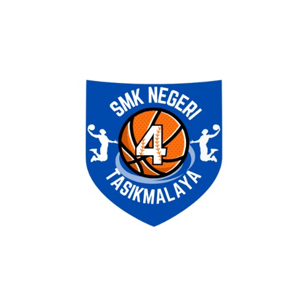
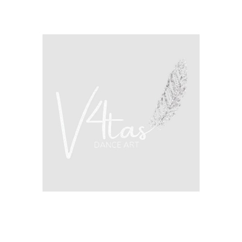

Ekstrakurikuler SMK Negeri 4 Tasikmalaya

Basket
Mengasah keterampilan bermain bola basket dan membangun jiwa kompetitif yang sehat.
Lihat Selengkapnya
Bulu Tangkis
Meningkatkan kemampuan bermain bulu tangkis sambil menjaga kesehatan dan semangat sportivitas.
Lihat Selengkapnya

English Club
Melatih kemampuan berbahasa Inggris melalui diskusi, debat, dan kegiatan interaktif lainnya.
Lihat Selengkapnya
Cinematografi
Mengajarkan seni pembuatan film, mulai dari pengambilan gambar, editing, hingga produksi video kreatif.
Lihat Selengkapnya
IT Club
Mengembangkan keterampilan teknologi informasi, termasuk pemrograman, desain grafis, dan jaringan.
Lihat Selengkapnya
Laskar Pustaka
Meningkatkan minat baca dan pengelolaan perpustakaan untuk mendukung literasi siswa.
Lihat Selengkapnya
Osis
OSIS memfasilitasi para siswa untuk belajar bertanggung jawab sesuai tugas masing-masing pengurus demi kepentingan sekolah dan semua siswa.
Lihat Selengkapnya